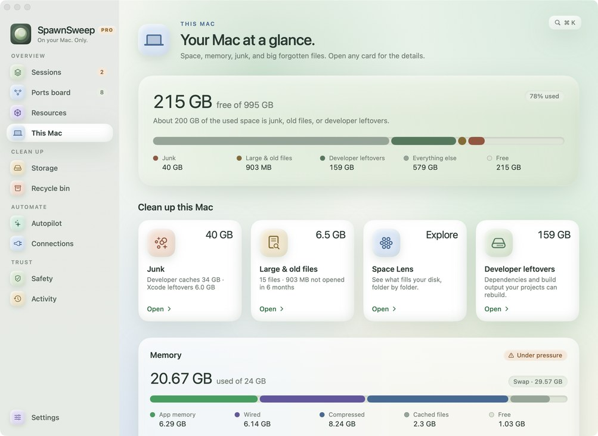
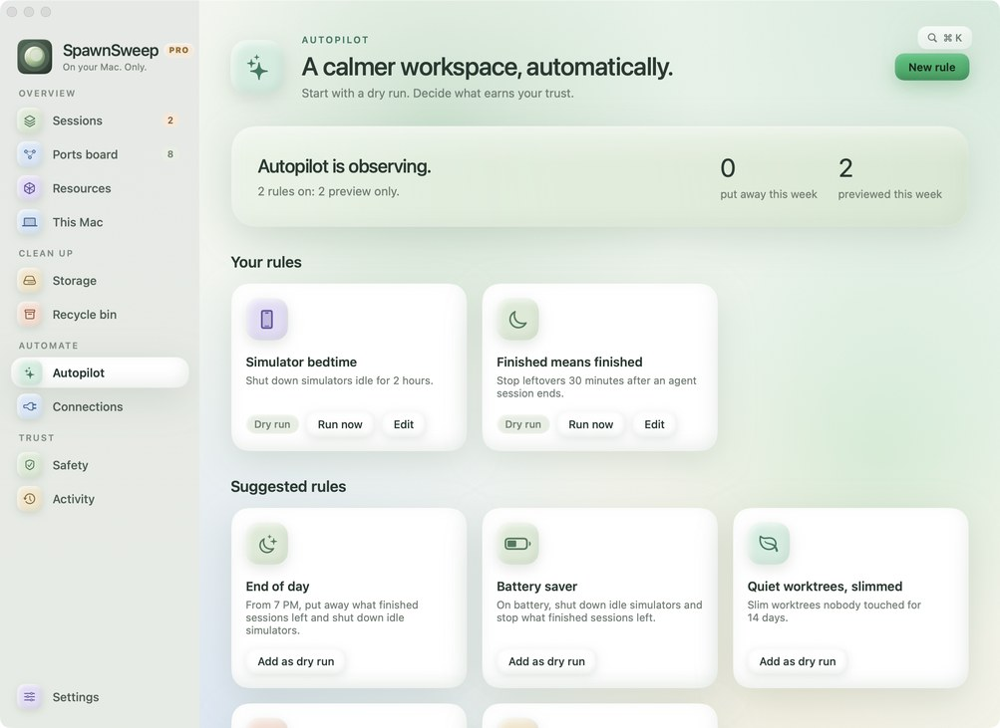

The Mac cleaner for AI coding agents
SpawnSweep is a free, open-source menu bar app. It finds leftover dev servers, busy ports, simulators, Docker stacks and Git worktrees. See what Claude Code, Codex and Cursor left behind, then review what to stop or remove.
curl -fsSL https://raw.githubusercontent.com/samirmaikap/spawnsweep/main/scripts/install.sh | bash
Paste into Terminal to install the latest release into Applications.
macOS 14 or later on Apple silicon. This build isn't notarized by Apple yet, so macOS asks once when you open the download. Here's how.
- next dev:3000412 MB
- vitest --watch96 MB
- Chrome (headless)238 MB
- iPhone 16 Pro simulator1.6 GB
- Metro bundler:8081180 MB
5 leftovers, 2.5 GB of memory
Try it. Sample data; the app shows what's running on your Mac.
What SpawnSweep finds
Agents start things to get work done and rarely put them away. SpawnSweep shows all of it, grouped by the session that started it.
-
Sessions
Every Claude Code, Claude app, Codex, Cursor, Gemini and Aider session with what it still has running, plus an end-of-day sweep.
-
Ports board
Every localhost listener with its project, branch, uptime and session. Free a port in one click.
-
Resources
Booted simulators and emulators, Docker stacks, file watchers and headless browsers.
-
Git worktrees
Worktrees per repo with status and size. Slim them, push and remove, or recycle merged ones and restore them later.
-
This Mac
Disk and memory at a glance, next to your agent leftovers. Junk and large & old files with Pro.
-
Autopilot
Rules that start as dry runs: simulator bedtime, finished-session leftovers, end of day, battery saver, low disk.
-
Connections
A Claude Code SessionEnd hook, an MCP server agents can ask before starting another dev server, and a Claude Code pane.
-
Safety & Activity
Public tunnels,
.envcopies (locations only), protected sessions and ports, and a log of every change with its way back. -
Notifications
A heads-up when an agent session starts, a simulator boots or a git worktree appears, each with its own switch.
-
Inside Claude
A 🌔 with the count of what's running in Claude's footer opens a pane beside your chat. How to add it.


SpawnSweep in 20 seconds
Agents leave ports, simulators and build data running. SpawnSweep groups them by session and puts them away.
How it compares
General Mac cleaners clear caches. Terminal works one process at a time. SpawnSweep knows what your agents started.
| Task | By hand in Terminal | General Mac cleaners | SpawnSweep |
|---|---|---|---|
| Leftover dev servers, watchers, headless browsers | Find each one with ps or lsof, then kill it | Not their focus | Grouped by the agent session that started them, stopped gently after a preview |
| Busy ports | lsof -i :3000, one port at a time | Not their focus | Every listener with its project, branch and session; free one in a click |
| Which agent started what | Can't tell | Can't tell | Every session: Claude Code, Codex, Cursor, Gemini, Aider |
| Git worktrees | git worktree list and remove; ignored files like .env go with it | Not their focus | Size and status per repo; slim or recycle, and restore later |
| Simulators and Xcode build data | xcrun simctl, delete DerivedData folders | Some clear DerivedData | Sizes listed, unused simulators removed; DerivedData with Pro |
| App caches, logs, large files | du and manual deletion | Their core feature | With Pro |
| Cleans up on its own | Your own scripts | Scheduled scans | Autopilot rules that start as dry runs; acting on their own with Pro |
SpawnSweep Pro
$9 once, for up to 3 Macs. The free app scans for everything, so you see what Pro would clean before you decide.
Get SpawnSweep Pro- Junk cleaner: app caches, logs, npm, Yarn, Gradle and Homebrew caches, Xcode leftovers and old installers.
- Large & old files: big files you haven't opened in months, sent to the Trash so nothing is lost.
- Autopilot that acts: rules that ask first with a notification, or act on their own and log a way back.
- Rules that run themselves: end of day, battery saver when unplugged, room to breathe when the disk runs low.
Deletes as little as possible, and asks first
Everything stays on your Mac. No account, no telemetry. Pro only checks its license key, about once a week.
- Manual cleanups start with a preview. Session sweeps skip active and pinned sessions.
- Processes are stopped gently: TERM, up to 10 seconds, then KILL. Never outside your user or inside
/Applications. - Slim removes only folders git ignores by name, like
node_modulesand.next, never a folder with tracked files. - Recycle saves ignored files that can't be rebuilt, like
.envand local databases, before removing a worktree. Restore brings everything back. - Large files go to the Trash, never straight to deletion. Docker volumes are never touched.
Frequently asked questions
How do I find what's using a port on my Mac?
In Terminal, lsof -nP -iTCP:3000 -sTCP:LISTEN shows the process listening on port 3000. SpawnSweep's Ports board lists every localhost listener at once, with its project, git branch, uptime and the agent session that started it, and frees a port in one click.
How do I stop the dev servers Claude Code or Codex left running?
Open Sessions. SpawnSweep groups processes by the agent session that started them, so a finished session shows exactly what it left behind: dev servers, watchers, headless browsers, tunnels. Review the cleanup and SpawnSweep stops them gently. The optional Claude Code SessionEnd hook can automatically stop matched processes when a session ends. Session sweeps skip active and pinned sessions.
How do I clean up old git worktrees?
git worktree list shows them and git worktree remove <path> removes one. SpawnSweep's Storage page lists worktrees per repo with their status and size. It can slim a worktree (remove rebuildable folders like node_modules) or recycle a merged one after saving ignored files such as .env, so Restore brings everything back.
How do I free disk space used by Xcode simulators?
xcrun simctl delete unavailable removes simulators for runtimes you no longer have. SpawnSweep's Storage page lists simulator devices and Xcode DerivedData by size and removes unused simulator devices with a preview. SpawnSweep Pro's junk cleaner also clears DerivedData.
Which AI coding agents does SpawnSweep support?
Claude Code, the Claude desktop app, Codex, Cursor, Gemini CLI and Aider. SpawnSweep associates processes with detected sessions when it can identify them. Anything else listening on a port still shows up on the Ports board.
Can I see what's running from inside Claude Code?
Yes. The SpawnSweep pane plugin shows each agent session with its dev servers, ports and Docker stacks in a side pane next to your chat and refreshes every 30 seconds. A moon with the count of what's running (🌔 4) sits in the footer; click it, or type /spawnsweep, to open the pane. It needs SpawnSweep in Applications. The easiest way to add it is Add to Claude on SpawnSweep's Sessions page, or the Claude Code pane switch in Connections. At the prompt of a Claude Code terminal session, run /plugin install spawnsweep --marketplace samirmaikap/spawnsweep. In the Claude desktop app, click + next to the prompt box, then Plugins, Add marketplace with samirmaikap/spawnsweep, then Add plugin.
Is SpawnSweep a CleanMyMac alternative?
For developers, mostly. SpawnSweep cleans what general Mac cleaners don't see: agent sessions, dev servers, busy ports, git worktrees and Docker stacks. SpawnSweep Pro adds the classic cleaning: app and developer caches, logs, old installers, and large & old files. It isn't an antivirus or an app uninstaller.
Is SpawnSweep free?
Yes. The app and its source code are free under the MIT license. SpawnSweep Pro, a one-time $9 purchase for up to 3 Macs, unlocks the junk cleaner, large & old files, and Autopilot rules that act on their own.